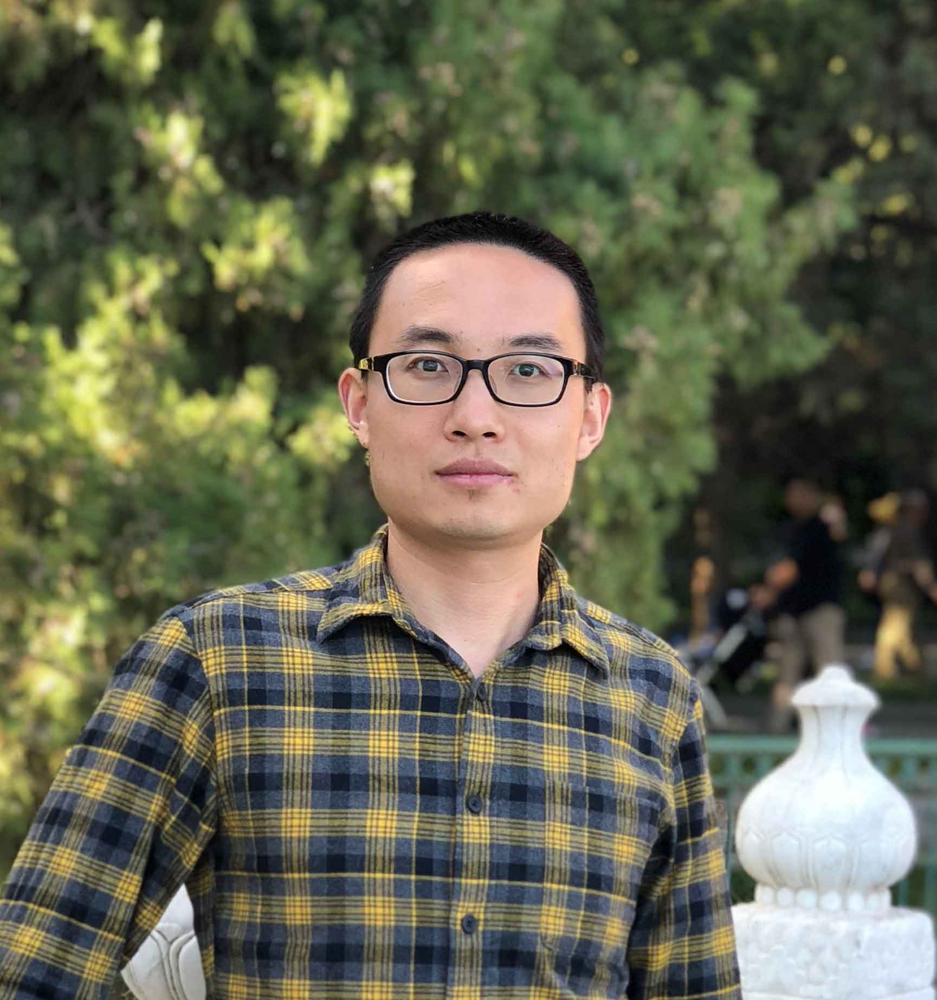

Postdoctoral Research Fellow
Kellogg School of Management
Northwestern Institute on Complex Systems (NICO)
Northwestern University
Evanston, IL 60208 USA
Email: yifang.ma [at] kellogg [dot] northwestern [dot] edu
Bio
I received a PhD in Mathematics from the School of Mathematical Sciences in 2016, Peking University. My Ph.D. research focused on dynamical systems and complex networks. I am now a post-doc at Kellogg School of Management and Northwestern Institute on Complex Systems (NICO), working with Prof. Brian Uzzi.
My research interests belong to Computational Social Science and Data Science. Mainly focus on three aspects: (i) Knowledge and technology spillovers among countries, states, and institutions and the border-crossing movements for scientific elites. (ii) Career development and performance in different career stages and the relations to gender, status and social network connections. (iii) The Matthew effects, creativity and interdisciplinarity in scientists’ careers and the potential gender bias in the current grant/award evaluation systems. I am also interested in data visualization.
Keywords: Mobility | Career | Knowledge | Gender | Data Visualization
Please see my publication on my publication page or Google scholar.
Latest News
- 09/20/2018 Colloquia: Quantifying science and scientific career, Silk Road International Symposium, Xi’an Jiaotong University, Xi’an, China
- Talk: Universal Links Between Mentor’s Tacit Knowledge Transfer and Protégés’ Propensity for Leading Scientific Thinking, 2018: 4th Annual International Conference on Computational Social Science, Jul. 13-15, 2018
- Talk: The Scientific Prize Network and Trying Out to Be the First in Science, 2018: 4th Annual International Conference on Computational Social Science, Jul. 13-15, 2018
- Poster: Mobility through Network of Scientific Institutions: Mentorship in Scientific Careers, International School and Conference on Network Science, Indianapolis, Indiana, June 19-23, 2017
- Talk: Bloodlines in Science: The Mentor-Protégé link, 5 slides 5 minutes pitch-a-thon, Kellogg Meeting, May 15, 2017
- Poster: Network of Scientific Bloodlines, International School and Conference on Network Science, Indianapolis, Indiana, June 19-23, 2017
- Poster: Evolutionary patterns in interorganizational networks: growth, contraction and substitution, NetSci-X-2017, Jan 16-18, 2017
- Talk: Scientific Bloodlines, First Science of Science meeting on Dec 5th, 2016
- Ignite Talk: Mentorship and Scientific Performance, Science of Science Chicago, Dec. 5, 2016.